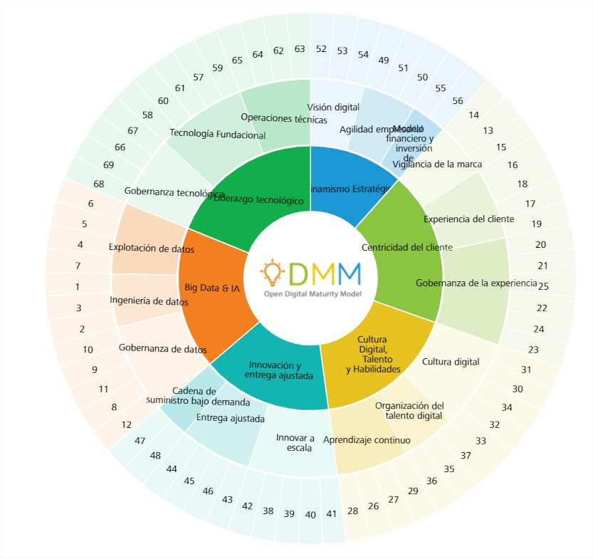

<div class="main-content">
    <div class="container-fluid">

        <div class="card">
            <div class="card-header card-header-success">
                <div class="row">
                    <div class="col-md-12 col-sm-12">
                        <div class="text-center">
                            <h3 class="card-title">TEST DE AUTODIAGNÓSTICO DIGITAL</h3>
                        </div>
                    </div>
                </div>
            </div>
            <div class="card-body pl-5 pr-5 pb-5">
                <!-- Sección inicio -->
                <section>
                    <div class="row">
                        <div class="col-md-6 col-sm-6 p-4">
                            <h2 class="titulo-home">
                                ¡Evalúe rápidamente el nivel de madurez digital de su empresa para una transformación
                                digital exitosa!
                            </h2>
                            <h4>La ODMM es la herramienta de evaluación de madurez digital. Esta evaluación flash es una
                                auto-encuesta destinada a proporcionar una visión rápida de alto nivel de la madurez
                                digital
                                de tu empresa y ofrece algunas sugerencias generales para que tu empresa tenga
                                un
                                punto de partida para iniciar la transformacion digital.</h4>
                            <hr>
                            <p>*¿Ya tienes un perfil privado de empresa creado? </p>
                            <button routerLink="/login" class="btn btn-success btn-block" type="button"
                                style="font-weight: 500; font-size: medium;">¡Registra tu
                                empresa! <span class="material-icons">login</span></button>
                        </div>
                        <div class="col-md-6 col-sm-6">
                            
                        </div>
                    </div>
                </section>

                <!-- Seccion objetivos test -->
                <section class="section-fondo">
                    <div class="row p-4">
                        <div class="col-sm-12 col-md-12">
                            <h2 class="text-center titulo-home">Lo que conseguirás al realizar el test</h2>
                        </div>
                    </div>

                    <div class="row pl-5 pr-5">
                        <div class="col-sm-4 text-center p-3 "> <i class="fas fa-signal"></i>
                            <h3>Conocer el nivel de digitalización de tu negocio</h3>
                            <p>Saber en qué punto estás y dónde quieres llegar es el primer paso
                                para tener éxito en el proceso de digitalización. De un solo vistazo conocerás cómo de
                                digitalizado está tu propio negocio, cuáles son sus necesidades y en qué ámbitos
                                flaquea.</p>
                        </div>
                        <div class="col-sm-4 text-center p-3"> <i class="fas fa-search-plus"></i>
                            <h3>Comparativas con otras empresas de tu sector empresarial</h3>
                            <p>Es esencial conocer bien a tu competencia y su grado de
                                digitalización. La propia digitalización es una ventaja competitiva ya de por sí, y el
                                mero hecho de no estar actualizado puede ser un lastre y desventaja para tu propia
                                empresa.</p>
                        </div>
                        <div class="col-sm-4 text-center p-3"> <span class="material-icons">recommend</span>
                            <h3>Sugerencias para avanzar en tu digitalización</h3>
                            <p>Dossier en PDF con sugerencias, sugerencias que te ayudarán a
                                darle un impulso al proceso de digitalización de tu negocio.</p>
                        </div>
                    </div>
                </section>

                <!-- Sección pasos a seguir -->
                <section>
                    <div class="row">
                        <div class="col-md-6 col-sm-6">
                            
                        </div>
                        <div class="col-sm-6 p-5">
                            <h2 class="titulo-home">Pasos a seguir</h2>
                            <ol class="listadopasos">
                                <li>
                                    <h3>1. Registra tu empresa</h3>
                                    <p>Accede a todas las ventajas: informe personalizado, comparativas del sector y
                                        sugerencias.</p>
                                </li>
                                <li>
                                    <h3>2. Realiza el test</h3>
                                    <p>Con solo unos clics y en menos de 30 minutos, sabrás el nivel de
                                        digitalización de tu negocio.</p>
                                </li>
                                <li>
                                    <h3>3. Descarga el reporte completo</h3>
                                    <p>Ahora que ya sabes cuál es el grado de digitalización de tu negocio, es el
                                        momento de acceder a las sugerencias y formación especiliazada que tenemos
                                        preparado para tu negocio, para tu equipo y para ti.</p>
                                </li>
                            </ol>
                        </div>
                    </div>
                </section>

                <!-- Seccion marco -->
                <section>
                    <div class="row justify-content-md-center p-4 section-fondo">
                        <div class="col-sm-10">
                            <h2 class="titulo-home text-center" >¿Qué mide exactamente el test?</h2>
                            <p class="text-center">El proceso de digitalización de una empresa debe
                                abarcar todas sus áreas. Para que puedas evaluar en qué punto está tu empresa, ponemos a
                                tu disposición un modelo de madurez digital que te ayudará a detectar tus debilidades y
                                fortalezas.</p>
                        </div>
                    </div>
                    <div class="row pt-5">
                        <div class="col-md-12 col-md-12 col-sm-12">
                            <div class="text-center">
                                <a routerLink="/acerca-de">
                                    
                                </a>
                            </div>
                        </div>
                    </div>
                </section>

            </div>

        </div>
    </div>


</div>